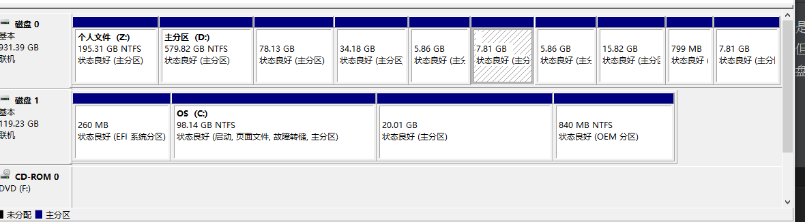
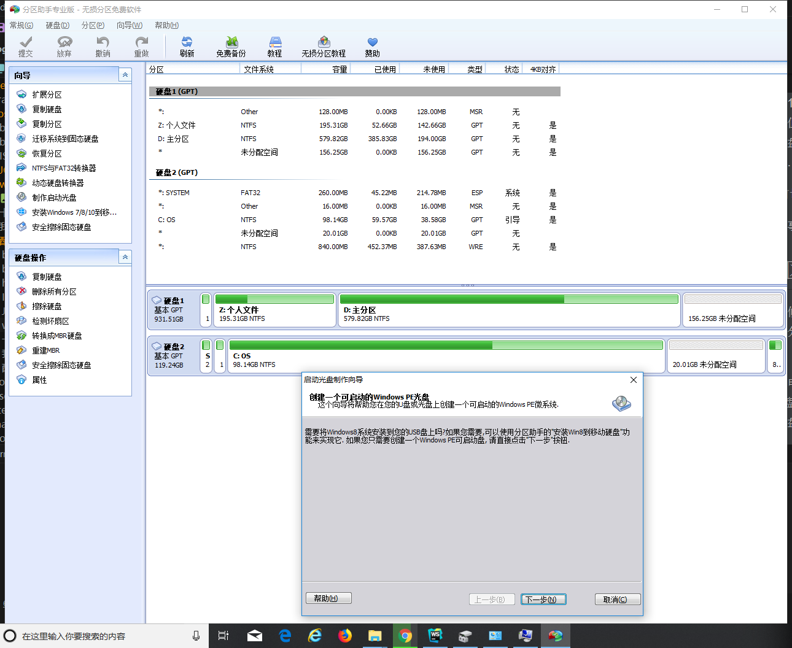

记录一下双系统搭建中出现的问题
Win10磁盘分区
我的电脑是128G SSD +1T 机械硬盘的组合，最初我试过将系统搭建在机械硬盘上，但是效果并不好（开机速度实在是太慢了），本次决定将系统搭建在两块硬盘上，详细的分区如下图（其实应该显示未分配空间，但是已经安装完了嘛……我也没法倒回去）：

分区之前切记备份数据！切记！
具体的分区事项百度一下就有，我就不多说了。下面说一点会出现的问题：
C盘分区
在分区的时候，可能C盘会遇到一点点的小麻烦——发现明明剩余空间还很大，为什么分区的时候分不出那么多空间来呢？针对这个问题，我们有以下解决办法：
- 查看 此电脑 -> 属性 -> 系统保护 -> 关闭C盘保护。
- 因为C盘是系统盘，所以我们采用第三方的分区软件（例如分区助手）进行磁盘分区，由于我的Win10版本是1803，比较新，所以采用制作启动光盘的方式，制作微PE系统引导后再进行C盘分区（引导启动下面会提到）

引导启动
不同牌子的电脑有不同的进入BIOS的方法，针对Win10系统，我们也有比较温和的方法：
1 | st=>start: 设置 |
这样我们就可以安全地进入BIOS了，记得要关闭电源设置里的快速启动和BIOS的某个选项（绝对不是我忘了，绝对不是！）。
制作启动盘并安装
制作启动盘
因为deepin官方给了制作启动盘的工具，只要有一个还算大的U盘和deepin系统镜像就行了，如果不想用官方的启动盘制作器，也可以用Rufus。
安装系统
按上面说的将优先启动项换为U盘，即可开始安装，至于分区嘛，因为我是为了加快速度的，所以就把根目录装在SSD，其余的分到机械硬盘上，具体分区的样子可以看上面那张图，凡是没有盘符有没有特殊标识的都是deepin的分区，之后谁有需要我再把详细图放上来吧。
显卡驱动（Nvidia）
这里是最麻烦，也是最容易出问题的部分，我在这里参照了好多链接，最后才有了解决办法。
参考链接(其他的记不住了)：
卡在logo界面
这里我们ctrl+alt+F3进入文本模式，然后禁用开源的驱动：
1 | sudo vim /etc/modprobe.d/blacklist.deepin.conf |
这时我们再ctrl+alt+F1回到图形界面（不行的话就重启），应该是可以正常登陆了。
安装Nvidia驱动
深度系统自己有驱动管理器，选择闭源的那个安装，如果成功则说明你很幸运，要是安装失败了，我们走接下来的流程：
参考链接：
1 | sudo apt-get update |
总结
目前就想到这么多的问题，如果之后再遇到的话再慢慢填坑（其实就是懒 -.-）